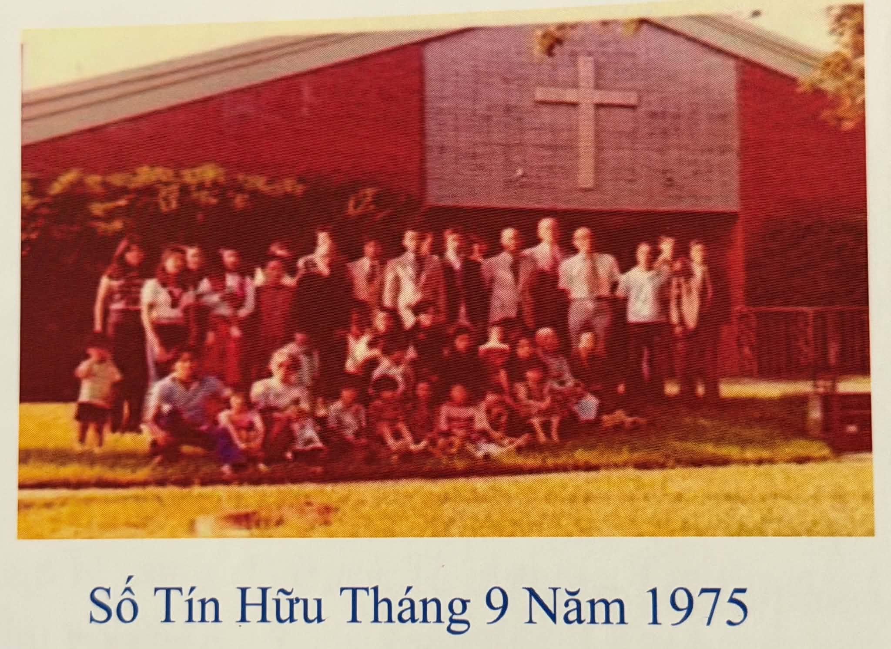

.png)
Trong tháng 8 năm 2026 chúng tôi sẽ tổ chức một đêm truyền giảng.

Đầu tháng 7 năm 1975, từ Wake Island, Mục sư Nguyễn Hữu Ninh đã hướng dẫn các vị: Quả phụ Mục sư Nguyễn Hữu Khanh, Truyền đạo Hà Minh Vinh; anh chị Nguyễn Hữu Tịnh với một con nhỏ, ông bà Nguyễn Phước Vĩnh Giêu và các con, ông Trần Bích Kiện và hai con lớn; anh chị Trần Bích Miên và một con nhỏ.
Tại trại tị nạn Fort Chaffee, Arkansas, từ đầu tháng 7 năm 1975, Mục sư Nguyễn Hữu Ninh tình nguyện phục vụ tại Văn phòng Thiện Nguyện C&MA VOLAG. Tưởng cũng nên nói thêm, trong các tuần lễ đầu của tháng 7 năm 1975, khi Mục sư Ninh còn đang tạm cư trong Trại tị nạn Ft. Chaffee, Arkansas, cố Mục sư Trương Văn Tốt, Giáo Hạt Trưởng/ Ban Chấp hành Giáo hạt Việt Nam tại Bắc Mỹ Hoa Kỳ đã điện đám báo tin bổ nhiệm Mục Sư Nguyễn Hữu Ninh đến phục vụ Chúa tại Hội Thánh C&MA. San José, Bắc California. Vì nơi đây đã có nhiều tín hữu người Việt C&MA đến định cư tại thành phố này đang cần người chăn bầy. Tuy nhiên, Mục sư Ninh có khải tượng về cánh đồng lúa thuộc linh tại Houston. Sau khi cầu hỏi ý Chúa, Mục sư Ninh đã chuyển địa điểm San José đến xây dựng một Hội Thánh ở Houston, dù nơi đây chỉ có một số tín hữu thật ít oi!
Trong thời gian này, Mục sư Ninh đã liên lạc với Mục sư James H. Livingston, quản nhiệm First Alliance Church tại Houston, Texas. Sau nhiều tuần lễ cầu nguyện và vận động của Mục sư Ninh, First Alliance Church đã đồng ý bảo trợ các gia đình tị nạn Việt kể trên đến Houston. Riêng Truyền đạo Hà Minh Vinh xuất trại đến một tiểu bang khác, nhưng thêm vào có ba thanh niên độc thân tại trại tị nạn Fort Chaffee gồm có: anh Nguyễn Văn Toại, Trần Tư Hồng Sơn và Trần Văn Hạnh. Tổng cộng có 14 người lớn, 3 thanh niên và 2 trẻ em. Nhóm người này lần lượt đến Houston trong chương trình bảo trợ của Frist Alliance Church.
Đầu tháng 8 năm 1975, Mục sư Nguyễn Hữu Ninh từ Houston bay đến New York City để tham dự Hội đồng Mục sư Truyền đạo đầu tiên tại Nyack Campus Bible College. Cùng lúc ấy, số người Việt tị nạn nói trên đã có mặt tại Houston và nhóm thờ phượng Chúa lần đầu tiên vào chiều Chúa nhật ngày 3 tháng 8 năm 1975 tại Frist Alliance Church, số 1408 Hyde Park Blvd., khu vực Montrose Downtown, Houston.
Trong ý chỉ tốt lành của Thiên Chúa Ba Ngôi, Hội Thánh Tin Lành Houston được thành lập bởi Chúa Thánh Linh. Hai tuần lễ sau, Ban Chấp Hành lâm thời của Hội Thánh và Thanh niên được bầu cử vào Chúa nhật ngày 17 tháng 8 năm 1975. Trong những năm đầu tiên, Hội Thánh C&MA như một chiếc thuyền con mong manh lướt giữa “phong ba bão táp” do một vài tín hữu gây rối; tuy nhiên, Chúa vẫn ở cùng hội thánh và Ngài đã quở trách để “gió ma im đi, sóng quỷ yên lặng đi!” (Ma-thi-ơ 8:24-26). Cũng trong thời gian này, có một số tín hữu ra đi và từ đó một hội thánh người Việt khác được thành hình thuộc giáo hội SBC Báp-tít.
Trong những năm tiếp theo sau năm 1975, số lượng thuyền nhân ào ạt ra đi tìm sự tự do. Họ sống tạm cư trong các trại tị nạn Hồng Kông, Songkhla (Thái Lan), Pulau Bidong (Mã-lai-á), Penang (Nam Dương). Sau đó, họ lần lượt vào nội địa Hoa Kỳ…. tại Houston. Trong thời gian này, Mục sư Ninh cũng trong Ban Cố Vấn của YMCA Downtown Houston. Ông đã thường xuyên đến Welcome Center do YMCA thành lập trên đường South Main Street để gặp và thăm viếng các người Việt tị nạn đồng hương sống tạm cư trong trung tâm nói trên. Mục sư Ninh cũng đã giúp phương tiện chuyển chở những người tị nạn này đến nhóm thờ phượng Chúa hằng tuần. Những buổi truyền giảng phúc âm cho người Việt đồng hương vào các dịp lễ cũng đã được tổ chức. Từ con số tín hữu ít oi, như ban đầu cổ cây mọc lên, kể có các nụ hoa, sau thì kết trái. Cũng trong thời điểm ấy, năm 1982, nhờ ơn Chúa, Mục sư Ninh đã tổ chức khóa “Huấn Luyện Người Lãnh Đạo”. Vào buổi chiều thứ bảy, có nhiều thanh niên nam nữ tham dự. Sau giờ học, các toán nam nữ chia nhau đi thăm viếng và gõ cửa các gia đình Việt để chia sẻ phúc âm. Sau hơn ba mươi năm, ngày nay chúng tôi nhìn thấy những khuôn mặt trẻ trung ấy nay là những chấp sự, trưởng lão nòng cốt phục vụ Chúa trong các hội thánh. Cũng có một số bạn trẻ đã vâng theo tiếng gọi Thiên thượng đi học Lời Chúa và nay họ trở thành người của Đức Chúa Trời.
Khoảng năm 1979, First Alliance Church quyết định bán cơ sở tại số 1408 Hyde Park Blvd. và mua nhiều mẫu đất tại vùng Braes Forest trên đường Eldridge Parkway. Số tín hữu Hoa Kỳ phải thuê một nơi khác để nhóm thờ phượng Chúa trong khi chờ đợi xây nhà thờ mới. Số tín hữu Việt lúc ấy không có nơi nhóm thờ phượng Chúa, đành phải nhóm thờ phượng Chúa tạm tại tư gia Mục sư Ninh. Vài năm sau, qua sự giúp đỡ của ông Wayne Tharpe và bà Kim Cúc, số tín hữu Việt Nam di chuyển đến Gethsemane United Methodist Church, trên đường Bellaire, vùng Sharpstown. Sau đó, Mục sư Ninh đã tìm được nơi nhóm thờ phượng Chúa tại Spring Branch Community Church, số 9650 Long Point Rd. Houston, TX. 77055. Từ đó, số lượng tín hữu càng gia tăng và quy tụ nơi đâu để thờ phượng Chúa và sinh hoạt hằng tuần.
Trong những năm này, Mục sư Ninh đã mời các Mục sư Tiến sĩ Lê Hoàng Phu, Giáo sư Trương Phan Hi, Mục sư Lê Vĩnh Thạch đến chia sẻ Lời Chúa. Tưởng cũng nên nói, Hội Thánh C&MA Houston đã đi tiên phong trong việc tổ chức trại hè, khởi đầu từ năm 1981. Về sau, trại hè quy tụ các tín hữu từ Oklahoma, Arkansas, Austin và Dallas đến dự trại.
Sau 11 năm gây dựng hội thánh, số tín hữu tăng trưởng về lượng lẫn phẩm, hội thánh đạt đến mức tự trị tự lập. Nay Mục sư Ninh có khải tượng “Vỡ Đất Mới” và vâng theo tiếng gọi của Chúa. Với đức tin, Mục sư Ninh và gia quyến lên đường đến vùng Midwest để mở hội thánh mới tại Nebraska.
Nhìn lại giai đoạn đầu tiên của 40 năm trước: Từ 7 đến cuối năm 1975, Hội Thánh C&MA Houston là một trong 23 Hội Thánh Việt Nam đầu tiên trực thuộc Giáo Hạt Việt Nam Hoa Kỳ hệ phái C&MA. Sau 40 năm chúng tôi nhận thấy rằng từ một hội thánh gốc, Hội Thánh C&MA đầu tiên đã nảy nở thêm 6 hội thánh C&MA người Việt khác tại thành phố này.
Ngày nay, chúng ta có thể thấy rằng Chúa đã làm những điều kỳ diệu tại thành phố Houston. Các nhà thờ của chúng tôi khởi đầu chỉ với 19 người mà thôi và hiện nay số lượng tín hữu đã lên đến hơn 1.000 người. Hơn nữa, có 18 nhà thờ thuộc cộng đồng của chúng ta, mỗi nhà thờ có nguồn gốc và hệ phái khác nhau; tuy nhiên, tất cả đều tin vào một Đức Chúa Trời duy nhất, đó là Chúa Giê-su Christ. Quý vị hãy tìm hiểu thêm về đạo Tin Lành và tìm một Hội Thánh gần mình để tham gia, chung vui trong ân sủng của Đức Chúa Trời!
Trong tháng 8 năm 2026 chúng tôi sẽ tổ chức một đêm truyền giảng.
Trưởng Ban Hiệp Nguyện:Mục Sư Nguyễn Hữu Ninh